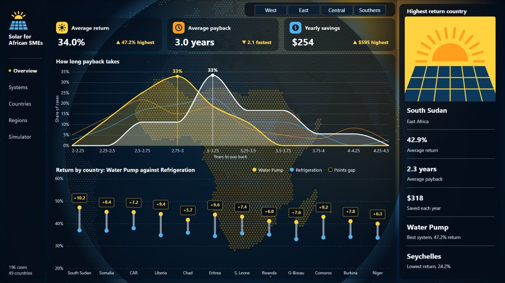
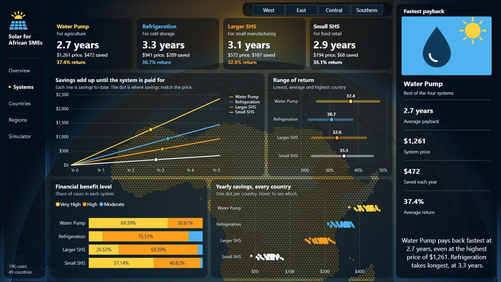
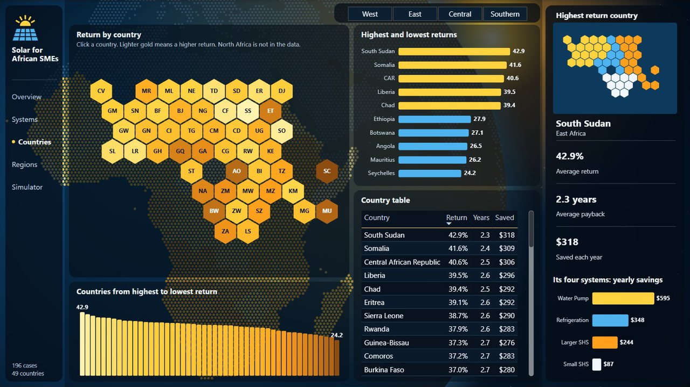
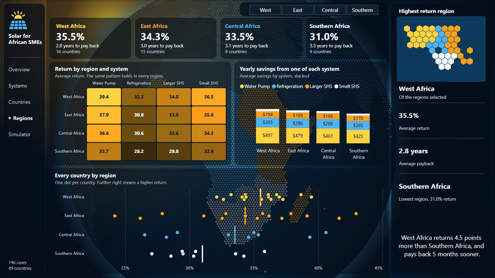
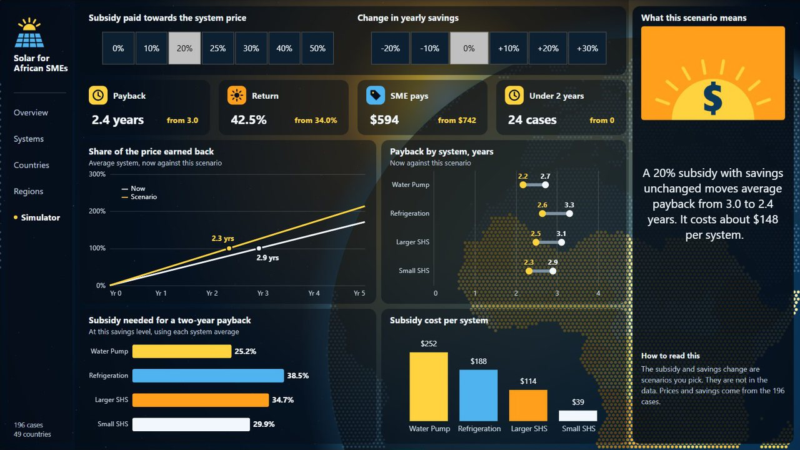

Capstone · Women Techsters Fellowship 2026 (Tech4Dev)
Does solar pay for itself for African SMEs?
A five-page Power BI report on 196 cases across 49 countries, with a clickable map and a subsidy simulator. This is a screen recording of the report running in Power BI. Pick a page below to jump to it.
3.0 yrsaverage payback
34.0%average yearly return
196cases
49countries
58DAX measures
The study
The question
Diesel generators and unreliable grid power are a large running cost for small businesses in Africa. Solar costs more up front, so owners need to know how much a system saves each year and how long it takes to earn back its price.
The data
Public benchmark data combined with a transparent return model. I took price, savings and payback benchmarks for Nigeria, Kenya, Rwanda and South Africa from reports by the World Bank, GOGLA, IRENA, Efficiency for Access, IFC and AfDB, then modelled 196 cases: 49 countries, each with four business types and the solar system each one uses. Every row is a modelled estimate. Compiled in February 2026 with Manus, an AI research agent. See the sources and dataset.
Method
Loaded and typed the data in Power Query. All 196 rows were complete, so nothing was dropped.
Built a star schema: one fact table and three lookup tables for country, system and benefit level.
Return = yearly savings ÷ price × 100. Payback = price ÷ yearly savings. Checked both against the dataset, row by row.
Averages count each case once. They aren't weighted by number of businesses.
The simulator applies a subsidy to the price and a change to savings, then recalculates payback for every case.
What the report found
Solar pays back in about three years. The average is 3.0 years, and 103 of 196 cases pay back in under three.
The most expensive system pays back fastest. Water pumps for farms cost $1,261 but save $472 a year, a 37.4% return and a 2.7-year payback.
West Africa leads. 35.5% return and 2.8 years, against 31.0% and 3.3 years in Southern Africa.
A 20% subsidy cuts payback to 2.4 years. It costs about $148 per system. A water pump needs about 25% to pay back in two years.
Limitations
Each business type uses one system, so business type and system can't be compared separately.
System prices are the same in every country. Regional differences come from savings alone, though real prices vary with import duties and suppliers.
Return and payback leave out loan interest, maintenance and battery replacement, so real payback will be longer.
Every country counts the same in the averages, whatever the number of businesses.
Every row is a modelled estimate, so country and regional rankings are scenarios, not measurements.
One tariff source uses 2014 schedules. Current regulator tariffs would make savings more accurate.
The data has no dates, so it can't show change over time.
Every page

1. Overview

2. Systems

3. Countries

4. Regions

5. Simulator
Built in Power BI with DAX, Power Query and Deneb by Bih Brandy Sango as the capstone for the Women Techsters Fellowship. Full method and all 58 DAX measures are on GitHub.